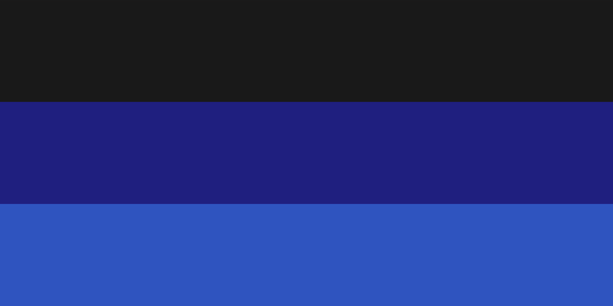

Доллания
|
Виртуальное государство
Доллания
Республика Доллания
|
|
|
 Государственный флаг
|
|
| Полное название | Республика Доллания |
|---|---|
| Дата основания | 06.06.2024 |
| Основатель | Dosia Dosfun |
| Язык(и) | русский |
| Государство | |
| Форма правления | республика |
| Форма государственного устройства | унитарное государство |
| Политический режим | авторитаризм с элементами демократии |
| Глава государства (президент) | Богдан Бояльский |
| Глава правительства (канцлер) | crimsonsunbeam |
| Председатель парламента (спикер) | отсутствует |
| Государственная религия | светское государство |
| Население | |
| Численность | 491 подписчиков (19.02.2026) |
| Название жителей (этнохороним) | долланнец, долланка, долланцы |
| Прочее | |
| Место расположения | ВКонтакте |
| Интернет-домен | dollania.run.place |
| Часовой пояс | UTC+3 |
Доллания, или Республика Доллания (англ. Dollania, или Republic of Dollania) — виртуальное ролевое государство, созданное в социальной сети ВКонтакте 6 июня 2024 года.
Доллания представлена исключительно в социальной сети ВКонтакте по тегу @dollania, а также на собственном сайте. Любые другие группы, каналы или страницы, использующие наше название и выдающие себя за Долланию, являются фейковыми.
История
Ранний период
Виртуальное государство было основано 6 июня 2024 года в социальной сети ВКонтакте в качестве сообщества пользователем Dosfun Dosia. Уже через десять дней, 16 июня, утвердили официальный флаг. 23 июня Доллания вместе с виртуальным государством Галлия стала инициатором создания Союза Объединения Виртуальных Государств (СОВГ) — виртуального межгосударственного альянса. На следующий день разрешили создание политических партий и общественных организаций. 29 июня прошёл референдум о выборе идеологии молодого государства. С 11 июля 2024 по 10 сентября 2025 года шло формирование территориального деления Доллании. Параллельно, начиная с 2 сентября 2024 года, выпускалась новая валюта — Виро. 14 ноября 2024 года состоялись первые выборы. К сентябрю 2025 года политическая жизнь Доллании заметно оживилась. 3 сентября была принята поправка: один гражданин мог быть создателем только одной политической партии. 4 сентября была принята первая Конституция, начались очередные выборы, а 7 сентября победу одержала автократическая партия «Единая Власть» под управлением Леонида Груздева. 9 сентября появились первые предприятия и была усилена армия. 10 сентября ввели новую валюту — DVCU — и пересмотрели территориальное деление. 12 сентября Доллания участвовала в футбольном чемпионате ЦКСР. 23 сентября прошли новые выборы, на которых выиграла партия НСПД (Народная Социалистическая Партия Доллании). На 9 сентября 2025 года в Доллании существовало восемь политических партий: две социалистические, одна социал-монархическая, одна коммунистическая, две демократические, одна автократическая и одна либеральная. 10 сентября четыре левых партии (две социалистические, социал-монархическая и коммунистическая) объединились в единую Социалистическую партию Доллании. К 15 сентября в стране осталось шесть партий: Республиканская партия Доллании, Социалистическая партия Доллании, Долланская Либеральная Партия (ДЛП), «Единая Власть», Демократическая партия Доллании (ДПД) и «Яблоко» (демократическая).
Октябрьский путч
25 сентября 2025 года президентом Доллании стал Дмитрий Кудрявцев. Сразу после вступления в должность он начал государственную перестройку: создание компаний, развитие инфраструктуры, перенос столицы, изменение государственных символов и запрет символики прежнего правительства. 26 сентября обновили карту страны и занялись развитием СМИ. Кризис разразился 29 сентября, когда Кудрявцев подписал закон об отказе от валюты DVCU в пользу валюты альянса ВИРО. Это вызвало протесты. 1 октября ситуация обострилась: президент отстранил от власти ОСРД (Организация Стратегического Развития Доллании), что вызвало рост недовольства. Верховный Арбитр Леонид Груздев реабилитировал ОСРД и отменил запрет, вынеся выговор президенту. В тот же день Кудрявцев попытался снова признать ОСРД экстремистской, но Груздев мгновенно отменил закон. Затем Кудрявцев был обвинён в узурпации власти, Груздев потребовал его отставки. Кудрявцев опубликовал прощальный пост и покинул пост. Начались выборы нового президента, а ОСРД была окончательно признана легальной.
Обострение и затишье
4 октября государство раскололось на две фракции — Совет и Верховного Арбитра. Митинги охватили весь СОВГ. Верховный Арбитр Леонид Груздев обвинил Совет, было неофициально введено чрезвычайное положение. СОВГ готовился ввести войска в Долланию на случай роспуска Совета (операция «Долланская звезда»). После ультиматума и требования об отставке Леонид Груздев покинул должность. Должность Верховного Арбитра была расформирована. Победу на выборах одержала Республиканская Демократическая Партия Доллании (РДПД). 5 октября создали Временное Правительство, 6 октября начали новые выборы, в ходе которых Совет раскололся на социал-демократов и либерально-демократическую коалицию. 9 октября президентом стал Мирослав Наумов.
Чёрный Ноябрь
26 ноября Германская Федеративная Империя (ГФИ) предъявила Доллании ультиматум с требованием отставки президента Мирослава Наумова. В тот же вечер был отдан приказ о создании западной и восточной линий обороны на случай вторжения. 27 ноября начались переговоры с ГФИ, но вскоре было принято решение о разделении Доллании на восточную и западную части. Вечером напряжение на фронте с ГФИ вокруг Стамбульского канала привело к вводу военного положения. В 21:20 27 ноября лидер Совета Доллании Олег Никитин попытался совершить государственный переворот и сместить Наумова. Переворот провалился: был издан приказ о роспуске Совета и аресте Никитина, армия ЦКСР ввела войска для подавления мятежа. В 22:09 был штурм здания Совета, к 22:31 все повстанцы и их лидер были арестованы. К 23:00 было решено вернуть Долланию и создать на её территории автономные республики. 28 ноября образовались две свободные автономии — Долланская Империя и Долланская Социалистическая Республика (ДСР). 29 ноября Юсуф Газиев попытался устроить переворот в Долландской Империи, но потерпел неудачу.
Кровавый Декабрь
2 декабря Dosia Dosfun победил на выборах. 3 декабря было проведено голосование за роспуск автономий, и автономии были распущены. В ДСР ввели военное положение и объявили мобилизацию. 4 декабря Доллания объявила ДСР сепаратистом, отказалась от переговоров и предъявила ультиматум. ДСР объявила войну Доллании, сославшись на угрозы суверенитету республики. К 22:13 было заключено временное перемирие: потери ДСР составили 590 тысяч, Доллании — 430 тысяч. 5 декабря гражданская война завершилась: ДСР осталась автономией, но лишилась права на выход из страны и подлежала демилитаризации. Общие потери были чудовищными. 15 декабря Dosia Dosfun вновь победил на выборах.
Золотое время
1 января 2026 года наступил период расцвета. Dosia Dosfun ушёл с поста президента, и на выборах победил Олег Никитин. В тот же день Афганистан вошёл в состав Доллании. Началась стабилизация отношений с ДСР. 3 января объекты Доллании внесли в список ЮНЕСКО СОВГ. 4 января страна провозгласила себя лидером по количеству объектов Всемирного наследия в СОВГ и восстановила Бамианские статуи. 10 января начались Антарктические экспедиции и космическая программа Доллании и автономии ДСР. 12 января первая Долланская космическая ракета успешно стартовала и вывела спутник на орбиту. 13 января была образована Искендерунская Научно-нейтральная область (ИННО). 14 января основали Долланский Кинопром. 15 января состоялся запуск космической ракеты с человеком на борту и начались новые выборы. С февраля по март сменилось несколько президентов: 5 февраля — Dosia Dosfun, 21 февраля — Олег Никитин, 26 марта — Мирослав Наумов. 26–27 марта прошла перестройка и национализация компаний.
Мартовский путч
26–27 марта по всей стране прокатились массовые митинги. 28 марта в 20:00 по московскому времени в Стамбуле началась революция. К 21:05 Бельская армия взяла город. В 22:00 Верховный Совет обвинил Мирослава Наумова в совершении импичмента. 29 марта временным президентом стал Юсуф Газиев, а Мирослав Наумов был внесён в чёрный список как иноагент Доллании.
Гражданская война
29 марта обе стороны объявили мобилизацию. В 2:00 ДСР была объявлена сепаратистским государством. Стороны начали переговоры. В 17:23 административное деление было изменено — Доллания стала империей, был создан ГСБ и национализированы компании. В 17:29 был подписан мирный договор, по которому ДСР становилась автономией Доллании, а взамен получала Месопотамию. Однако не все согласились с договором: в 17:56 начался Чеботарьский мятеж — несогласные направились на Стамбул. К 19:04 мятеж был подавлен: ДСР перешла в Египет и создала ЕСР (Египетскую Социалистическую Республику). В 19:41 Доллания вышла из МАВГ и вступила в МОВГ.
Стабилизация ситуации
7 апреля было создано ОМД. 8 апреля начались протесты в Катаре. 11 апреля в 19:00 президентом стал Дмитрий Кудрявцев, но уже в 22:22 он был подвергнут импичменту, и временным президентом снова стал Юсуф Газиев. 12 апреля начались новые выборы, и Мирослав Наумов был снят с списка иноагентов. 14 апреля президентом стал Aperture Fixtures N-S-F. 15 апреля Долланская Империя была преобразована в Долланскую Коммуну, а Мирослав Наумов возглавил КГБ. 29 апреля разразился Египетский кризис: Наумов был снова признан иноагентом, ЕСР предъявила ультиматум, Aperture был подвергнут импичменту, Дом Совета в Доллании обстрелян, а на Наумова совершено покушение. 1 мая состоялись выборы, на которых победил Aperture.
Долланская весна
С 1 по 10 мая Совет неоднократно заявлял об импичменте Aperture, но эти заявления были остановлены. Ситуация накалялась. 10 мая в 17:00 в Доллании началась революция: Совет объявил об импичменте Aperture и Юсуфа Газиева, а армия Совета взяла под контроль Турцию, Кавказ и Левант.
Конец Империи
Как писал философ Джордж Сантаяна:
Конец войны видели только мёртвые. — Джордж Сантаяна10 мая в 18:00 началась ядерная бомбардировка. 45 ядерных бомб ударили по крупным городам революционеров. Одновременно были выпущены неядерные ракеты по Тегерану: город был полностью разрушен. Дмитрий Кудрявцев и Максим Шварев были арестованы спецслужбами, но через час освобождены. К 19:33 революция завершилась. 11 мая в 2:00 начались новые выборы. Мирослав Наумов был назначен министром обороны и ТЗО. К 18:00 ситуация в Тегеране стабилизировалась (при подавлении восстания погибло 40 тысяч), началась подготовка к ядерной зиме. 12 мая при стабилизации в городах умерло ещё 150 тысяч человек; с начала ядерной войны погибли 22 миллиона. 6 августа деятельность Доллании была временно приостановлена.
Осеннее возрождение
19 сентября работа виртуального государства была возобновлена по инициативе Богдана Бояльского, и он вступил на пост Главы Правительства Доллании (Канцлера). На следующий день, 20 сентября, Богдан Бояльский был назначен Президентом Доллании.
Хронология
| Дата | Событие | Примечание |
|---|---|---|
| 06.06.2024 | Основание государства | ВКонтакте, сообщество |
| 16.06.2024 | Утверждение флага | — |
| 23.06.2024 | Создание СОВГ | Совместно с Галлией |
| 10.05.2026 | Ядерная бомбардировка | 45 бомб, конец революции |
Символика
Флаг
Флаг Доллании представляет собой полотно с пропорциями 1/2 ширины к длине. Три равнозначных горизонтальных полосы разных цветов:
- верхняя — чёрный (HEX:
#000000); - средняя — синий (HEX:
#1F1F7F); - нижняя — голубой (HEX:
#2F53BF).
Флаг был принят 16 июня 2024 года. Несколько раз изменялись оттенки, но цвета оставались теми же.
См. также
Примечания
- Данные актуальны на 22.02.2026.
- Подробнее см. Историю.